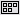
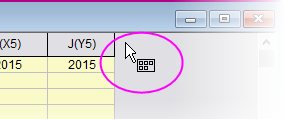
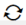

Originのインターフェース
Origin-Interface
Originのワークスペース
Originのワークスペース
この章では、Origin ワークスペースのナビゲートに関する基本的な情報を提供しています。長年Originをご利用の方は、この章は読み流していただいても問題ありません。
 | ウィンドウのサイズとワークスペース内の位置は、さまざまな表示に対応するように自動調整されます。これにより、すべてのウィンドウやダイアログボックスのサイズを変更/再配置しなくても、例えば、ノートPCと高解像度モニターで表示を統一できます。再スケール動作を制御するためのシステム変数@SRWS（0 =以前の動作、1 =幅を合わせ、yをスケール、2 =高さを合わせ、Xをスケール、3（デフォルト）=幅と高さを合わせる）が追加されました。
|
Windowsファイルエクスプローラでのプレビュー
Originインターフェイスの一部ではありませんが、Windowsファイルエクスプローラ（以前のWindowsエクスプローラ）を使用して、プロジェクトファイル内のグラフをプレビューできます。
- Windowsエクスプローラの大または特大アイコン（ファイルエクスプローラで右クリックし、表示：大アイコンまたは特大アイコンを選択するか、エクスプローラの表示メニューから選択）で、プロジェクトファイルが保存されたときにアクティブだったグラフのイメージを表示します。
- プレビューウィンドウを開き(ALT+P)、スクロールすると、プロジェクトファイル内の全てのグラフがプレビューできます。
- グラフプレビューをファイルに保存したくない場合（アイコンビューまたはエクスプローラーのプレビュー表示）、LabTalkシステム変数@PESS=0または=-1に設定します。システム変数の値を変更する方法については、FAQ-708 システム変数を永続的に変更するにはにあるシステム変数の変更を参照してください。
Originのメニューとメニューコマンド
メニュー
- 状況依存型のメニューバーとメニュー：メニューバーやメニューの内容は、アクティブなウィンドウの種類（グラフやワークブック、行列など）に依存し変化します。アクティブなウィンドウに対して適切なメニューのみ表示されます。
- メニューのアイコン、ツールバーボタン、ショートカットキー：一部のメニューコマンドには、コマンドの左側にアイコンが付いています。また、メニューコマンドの右にショートカットキーの組合せがあります。ボタンアイコンとショートカットキーは、同じ機能にアクセスするための別の方法を示しています。
- ショートカットメニューコマンド: 多くのコマンドをショートカットメニューから利用可能です。ショートカットメニューを開くには、操作を実行したいオブジェクト上（ワークシートウィンドウ、グラフの軸、テキストオブジェクトなど）で右クリックします。適切なメニューコマンドのみ表示されます。
- 折りたたみメニュー：折りたたみメニューフルメニューデフォルトで、Originのメインとショートカットメニューは「折りたたみ」で、コマンドの折りたたみ設定で表示されています。メニュー外の項目を使用すると、その項目はメニューに追加されます。開いたときにすべてのメニューを表示する場合は、環境設定：オプションをクリックし、その他タブをクリックし、メニューの折りたたみの利用のチェックボックスをオフにします。
- 最近使ったメニューコマンド：最近よく使われたメニューコマンドは、解析メニューの下に表示されています。 (ワークシート, 分析, 統計, イメージ, etc.).これにより、繰り返し操作をする際に、ツールをすぐに利用できます。
- 最近使ったファイル: ファイルメニューのサブメニュー (例：ファイル: 最近使ったプロジェクト) で最近開いた、あるいは最近保存したファイルが表示されます。そのため、現在作業中のファイルを簡単に見つけ出して開くことができます。
- カスタムメニューオーガナイザ: Origin 8.1以降、カスタムメニューオーガナイザを使用して新しいメニューを作成したり、組込メニューを非表示にすることができます。詳細情報は、Originのカスタマイズの章をご確認ください。
| すべてのOrigin ファイルのアクティビティにはプレーンテキストのログが存在します。ファイルは「OriginProjHistory.txt」という名前で、ユーザファイルフォルダ (ヘルプ: フォルダを開く: ユーザファイルフォルダ) に保存されます。ログのエントリ最大数は、システム変数@MHF (デフォルト = 1000) によって制御されます。
|
Originのツールバー
Toolbars, Customizing
ツールバーのカスタマイズダイアログ（表示：ツールバー）を使って、ツールバーの表示を設定したり、リセットや初期化することができます。
- ツールバーボタンの外観表示をカスタマイズ：ツールバーのカスタマイズダイアログボックスのオプションタブでボタンやツールバーの表示を設定できます。
- ツールバーのドッキングとフローティング：ツールバーは、ツールバーの領域からドラッグして切り離し、ワークスペース上でフローティング状態にできます。ツールバーをフローティング表示にするには、ツールバー左端にマウスカーソルを置きます。ポインタが4方向の矢印になったら、ワークスペースまでドラッグすることで独立した状態になります。ツールバーを元の位置に戻すには、ツールバーのタイトルバーをダブルクリックします。
- ツールバーの表示/非表示：ツールバーの閉じるボタンをクリックすると非表示にできます。非表示にしたツールバーを、表示するには、ツールバーのカスタマイズダイアログボックスを開き、ツールバータブで表示したいツールバーを選択します。
- ボタンの表示/非表示: ツールバーの右端の小さい矢印をクリックして、ツールバーのボタンのオンとオフを切り替えます。
- ボタンの移動/非表示: Altキーを押しながらボタンをドラッグすることでツールバー内またはツールバー間で移動可能です。Altキーを押しながらボタンをワークスペースの何もない領域にドラッグすることで、新しいツールバーが作成されます。ボタンを非表示にするにはAltキーを押しながらボタンを子ウィンドウ上までドラッグし、"X"の表示になったら離すことで可能です。
Originの標準ツールバーについての情報は、このユーザガイドの後に、ツールバーとボタンのカスタマイズを参照してください。
ミニツールバー
OriginLabは、一般的なオブジェクトとタスクのため、ミニツールバーのサポートを改善し続けています。これらのツールバーは、がオブジェクトを選択したとき、または、ページ内の特定の領域をクリックしたときに表示されます。利用できる設定項目は、コンテキスト（オブジェクト、ウィンドウタイプなど）に依存します。
- ミニツールバーを使用する前に、メインメニューの表示：ミニツールバーにチェックがついている（デフォルト）ことを確認してください。
- ツールバーを表示するには、データプロット、テキストラベル、ワークシートセルなどのオブジェクトを選択します。
- さらに、より一般的なページレベルおよびレイヤレベルのカスタマイズ用のツールバーがあり、これらのツールバーはウィンドウの余白の近くにカーソルを合わせると表示されます。マウスカーソルがこのようなものに変わると、これは、この場所をクリックすると、関連するツールのミニツールバーが表示されるという合図です。
- 
- ほとんどのミニツールバーには、より複雑な設定（グラフウィンドウの作図の詳細ダイアログボックスなど）にアクセスできるプロパティボタン
 があります。
があります。
- カーソルを移動したり、十分な速さで操作しないと、ミニツールバーは消えてしまいます。消えたミニツールバーを再度表示するには、SHIFTキーを押します。
- ミニツールバーにボタンを追加または削除するには、ツールバーの中央下にある3つのドットをクリックします。これによりミニツールバーのカスタマイズダイアログを開くので、必要に応じてボタンを有効または無効にできます。
スタートメニュー
検索ツールボックスにキーワードとフレーズを入力して、メニュー項目、アプリ、FAQs、ビデオ、Xファンクションを検索します。最近使用したファイル、メニュー、アプリを開きます。
（1）F1を押すか（他のダイアログが開いていないとき）、（2）Originワークスペースの左下隅にある虫眼鏡アイコンをクリックする、またはメインメニューの（3）ヘルプ：スタートメニューをアクティブにする項目をクリックしてスタートメニューを開きます。
検索範囲を絞り込むには、検索語句の前に次の文字を入力します：
m = メニュー項目のみ検索
a = アプリのみ検索
h = ヘルプとFAQのみ検索
v = ビデオのみ検索
x = Xファンクションのみ検索
p = 最近使用したプロジェクトを検索
s = サンプルプロジェクトを検索
e = メニュー、アプリ、Xファンクション（実行可能なもののみ）を検索
その他の方法
検索ボックス付近の「歯車」アイコンをクリックして設定ボックスを開きます。ここでは、検索結果を制限し、他の検索設定を調整することができます。
ラーニングセンター
ラーニングセンターは、グラフ作成と解析のサンプルに加えて、学習リソース（チュートリアル、ビデオ、OriginLabブログなど）にすばやくアクセスできるようにすることを目的とした「スタートアップ」ダイアログです。
- このダイアログを開くには、ヘルプ: ラーニングセンターを選択するかF11キーを押します。
- Originが起動するたびにこのダイアログを表示または非表示にするには、開始時に表示チェックボックスをオンまたはオフにします。
- グラフを再作成するためのサンプルデータとメモを含んだサンプルのグラフを選択してロードします。
- データ付きの分析サンプルをロードします。
- チュートリアルやビデオ、Origin Blog、User Forum、Originソーシャルメディアページへのリンクについては、ラーニングリソースタブを参照してください。
- これまでのUser Filesフォルダから、新しいUser Filesフォルダにファイルを移動します。
| Origin 2023の新しいグラフ形式を確認するには、ラーニングセンターを開き、グラフサンプルタブをクリックして、フィルタドロップダウンですべてのプロットタイプ を選択し、2023 を検索します。
|
プロジェクトエクスプローラ
プロジェクトエクスプローラ(PE)は、Originプロジェクトファイル(OPJ/OPJU)の内容を管理できる機能です。
プロジェクトエクスプローラは2つのパネルを持ちます。第一パネルではOPJのフォルダ構造を表示します。サブパネルには、メインパネルで強調表示されているフォルダに含まれるウィンドウが表示されます。
| Origin 2018以前のバージョンでは、PEのサブパネルは上パネルで選択されたフォルダ内のサブフォルダを一覧表示していました。表示モードを戻すには、システム変数@PEF = 1の設定をします。
|
プロジェクトエクスプローラを使ってプロジェクトを管理する
- プロジェクトエクスプローラのタイトルバーを右クリックするかドロップダウンメニューをクリックして、垂直方向の表示（上下積上げ）か水平方向（隣合う）の表示か選択できます。
- 両方のパネルで、右クリックして開くコンテキストメニューから、削除、非表示、印刷などのオプションを選択できます。表示されるメニューは、どの項目で右クリックしたかに応じて変化します。
- サブパネルで、Shift または Ctrlキーを押しながらクリックすることで、ウィンドウを複数選択できます。
- サブパネルで、ウィンドウ表示を変更：詳細 (デフォルト), リスト, 小さいアイコン, 大きいアイコン, 特大アイコン
- どの表示でも、マウスカーソルを移動すると、ウィンドウアイコンがグラフ、ワークスート、行列、レイアウトウィンドウのプレビューを表示します。ウィンドウコントロールはツールチップに表示されます。
- サブパネルを右クリックし、Ctrlキーを押してプレビューを表示を選択してチェックマークを付けることで、ポップアッププレビューの表示を制御します。チェックを付けると、ポップアップはCtrlキーを押したときのみ表示されます。
- 特大アイコンでウィンドウを表示した場合、PEサブパネルにグラフ、レイアウトウィンドウ、ワークブック、行列ブックのサムネイルが表示されます。ウィンドウコントロールはツールチップに表示されます。
- PEフォルダ（上のパネル）を右クリックしてコピーを選択するか、またはフォルダを選択してCTRL+CとCTRL+Vを実行して、現在のプロジェクト内の別のフォルダ、または（b）2番目のOriginセッションで実行中の別のプロジェクトにフォルダ構造と内容をコピーして貼り付けます。単一のワークブックウィンドウをコピーするには、ウィンドウ（下パネル）を右クリックしてコピーしてから（a）同じプロジェクト内の別のフォルダ、または（b）2番目のOriginセッションで実行中の新しいプロジェクトに貼り付けます。

|
- ヘルプ: フォルダを開く: プログラムフォルダを選択して、Samplesサブフォルダをクックし、Tutorial Data.opjをOriginワークスぺースにドラッグします。
- デフォルトで、プロジェクトエクスプローラはワークスペースの左側にドッキングされ、自動で非表示になっています。プロジェクトエクスプローラタブ上にマウスを移動すると、ウィンドウが開きます。
- プロジェクトエクスプローラのタイトルバー上にある画鋲のアイコンをクリックして、このウィンドウを指定の位置にドッキングします。
- デフォルトでサブパネルは詳細表示になっています。この表示では、名前、サイズ、コメント、といったウィンドウのメタデータがこれらの列ヘッダの下に表示されます。列ヘッダをドラッグして、順序を変更してみましょう。
- 列ヘッダで右クリックしてそれぞれの項目のチェックによって、表示/非表示を切り替えできます。
- コメント欄でコメントを追加するには、一度クリックし、もう一度クリックします。これにより編集モードになります。コメントを入力します。
-
- ウィンドウの名前を変更するには、行で右クリックして名前の変更を選択します。名前欄ではデフォルトでウィンドウのショートネーム、ロングネームが存在する場合はロングネームを表示します。（全てのウィンドウはショートネームを持ち、ロングネームはオプションです）。編集可能な名前フィールドの右側にあるSNまたはLNボタンをクリックして、ショートネームまたはロングネームを編集します。ロングネームがない場合、入力できます。
- プロジェクトエクスプローラの上部パネルで、3D Surface with Point Labelフォルダにスクロールし、クリックします。サブパネルはフォルダ内の3つのウィンドウを表示します。ワークシートウィンドウeastcali3053は太字で表示され、アクティブなウィンドウであることを示します。アクティブウィンドウは操作されているウィンドウで、使用可能な操作を決定します。また、ノートウィンドウとMBook4行列ウィンドウがあります。
- サブパネルでMBook4をダブルクリックすると、アクティブウィンドウになることにより太字表示になり、アイコンに紫の枠がかかります。また、（ワークスペース内の）アクティブウィンドウ全体にも色の枠がつきます。アクティブウィンドウの枠は システム変数 @AWC-- でお好きな色に設定できます。MBook4アイコンを再度ダブルクリックすると、アイコンが淡色表示になります。ワークスペースから実際のウィンドウがなくなります。これはMBook4が非表示になったためです。MBook4を再度ダブルクリックすると、ウィンドウが復元され、アクティブになります。
- MBook4をアクティブにして、作図> 3D: 曲面: 3カラーマップ曲面をクリックします。これで3Dカラーマップ曲面を作成できます（確認メッセージは閉じます）。新しいウィンドウGraph1がプロジェクトエクスプローラのサブパネルに表示されます。
- サブパネルの何もない部分を右クリックして、表示モード: より大きいアイコンを使用を選択します。Graph1がサムネイル表示になります。

- また右クリックして表示モード: 大きいアイコンを選びます。ウィンドウはアイコンで表されるようになりますが、アイコン上にマウスを置くと、ウィンドウの内容がポップアップとして表示されます。

|
フォルダノート
プロジェクトエクスプローラフォルダにフォルダノートを追加できます。
- フォルダ上で右クリックしてフォルダノートを選択します。
- フォルダコメントがない場合、これによりフォルダに空のフォルダノートウィンドウが追加されます。ノートウィンドウの内容の追加と表示についてのオプションはこのページを参照して下さい。
- 既存のコメント（フォルダを右クリックしてプロパティを選択して設定可能）がある場合、フォルダノートにはコメントの内容がコピーされます。
- フォルダを切り替えた場合、フォルダとウィンドウツールバーを使って、固定または最小化されているかどうかに関係なく、フォルダノートは常に表示されます。
- 閉じるボタン
 を使ってフォルダノートを閉じた場合、フォルダに埋め込まれ、PEのフォルダを右クリックしてフォルダノートを選択した場合のみ表示されます。
を使ってフォルダノートを閉じた場合、フォルダに埋め込まれ、PEのフォルダを右クリックしてフォルダノートを選択した場合のみ表示されます。
加えて...
- プロジェクトエクスプローラのフォルダ上をCtrlキーを押しながらマウスオーバーするとフォルダノートの内容を表示することができます。
- システム変数@FNS が追加され、フォルダノートのデフォルトの構文を設定できます (= 0 (テキスト), = 1 (HTML), = 2 (Markdown), = 3 Originリッチテキスト (デフォルト))。
- フォルダノート、フォルダ複製、またはフォルダ プロパティダイアログを開くためのミニ ツールバーが追加されました。
フォルダとウィンドウツールバー
| プロジェクトエクスプローラのフォルダとフォルダの内容を操作するための新しいツールバーフォルダとウィンドウが追加されました。Origin 2023の初回起動時に、このツールバーがフローティング状態でOriginのワークスペースに追加表示されることがあります。その場合、タイトルバー部分をドラッグしてツールバー領域の空いている部分に配置したり、表示：ツールバーを選択して再初期化ボタンをクリックすることでツールバーの構成をリセットすることができます。
|
フォルダとウィンドウツールバーを使用するとプロジェクトエクスプローラ のフォルダを簡単に切り替えたり (シーソー/Seesaw)、アクティブなウィンドウを前のフォルダにショートカットとして追加したりできます。さらに、アクティブなウィンドウを所定の位置に固定したり、アクティブなフォルダ内のウィンドウの整列（ウィンドウ：ウィンドウの整列<前回どおり>）が可能です。
- 前のフォルダ: 現在のフォルダから一つ前のフォルダに戻ります。
- 次のフォルダ: 前のフォルダから現在のフォルダに戻ります。
- Seesaw: 2つのフォルダを交互に切り替えます(Ctrl + Alt + X)。メニューではウィンドウ: シーソーを選択します。
- シーソー用にアクティブウィンドウのショートカットを追加: アクティブウィンドウを前のフォルダにショートカットとして共有します(Ctrl + Shift +F7)。 他の方法として、ウィンドウタイトルを右クリックして、前のフォルダにショートかとを追加できます。
- 前のフォルダからショートカットを追加: ウィンドウの種類によって現在のフォルダにショートカットを追加します。
- ウィンドウを整列 (前回どおり): ウィンドウ: ウィンドウを整列<前回どおり>メニューと同じです。
- アクティブウィンドウを固定: ウィンドウを固定して、ウィンドウを整列（前回どおり）をクリックしたときに除外します。他の方法として、ウィンドウタイトルを右クリックしてウィンドウを固定（固定解除）できます。
ウィンドウショートカット
プロジェクトエクスプローラで選択されているフォルダとは別のフォルダにカーソルを合わせ、右クリックすると、現在のフォルダにショートカット追加が可能です。ウィンドウタイプ別にアクティブフォルダにショートカットを追加するためのダイアログが開きます。
-
- アクティブなフォルダにショートカットウィンドウを追加すると、ホームボタン (オリジナルに移動)
 が表示されます。このボタンをクリックすると、フォルダが切り替わり、元のウィンドウがアクティブになります。
が表示されます。このボタンをクリックすると、フォルダが切り替わり、元のウィンドウがアクティブになります。
- ショートカットウィンドウでは、PEフォルダの名前が括弧で囲まれてウィンドウのタイトルバーに表示されます。
- ショートカットウィンドウの閉じるボタンをクリックすると現フォルダのショートカットが非表示になります。
- アクティブなフォルダからショートカットを削除するには、プロジェクトエクスプローラでフォルダを右クリックし、ショートカットを削除をクリックします (削除するショートカットがない場合はメニューが淡色表示になります)。
- ショートカットとして追加された最小化または最大化されたウィンドウは、表示のみなのでワークスペースがいっぱいになることはありません。
アプリセンターとアプリギャラリー
アプリギャラリー アプリは、特別なグラフ作成や分析タスクを行うためのアドオンアプリケーションです。科学技術分野で広く適用されるいくつかのアプリは、Originソフトウェアに事前インストールされています。

アプリセンターダイアログを利用して、Originアプリを検索したりアップデートやダウンロードを行えます。この新しいダイアログでは、ブラウザを開くことなく、OriginLabのファイル交換の場のすべてのアプリケーションに直接アクセスできます。
プリセンターを開くには、Originのワークスペース右側にあるアプリギャラリー内のアプリの追加ボタンをクリックします。アプリギャラリーがないときは、表示: アプリ（またはALT + 9）をクリックして、アプリの横にチェックマークがあることを確認します。
- アプリセンターでは、インストール済みで最新のアプリには緑のチェックマークのアイコンが表示されます。
- インストール済みで、新しいバージョンがあるアプリには更新アイコンが表示されます。 
- インストールされていないアプリは、ダウンロードとインストールアイコンが表示されます。

Originの統計、解析: フィット、解析: ピークと基線メニューには、アプリ検索メニューが含まれます。アプリ検索をクリックすると、アプリセンターが開き、統計などのメニューに関連するアプリのみを表示します。アプリセンターから直接アプリのダウンロードや更新か可能です。
アプリギャラリーを使ってインストール済みのアプリにアクセスしたり管理できます。
| アプリの新しい/更新バージョンは、OriginおよびOriginProユーザーが継続的に利用できます。F10キーを押してアプリセンターを開いてください。赤い今すぐダウンロードボタンが表示されている場合は、クリックして利用可能なアプリの最新リストを取得してください。

|
アプリについての詳細は、www.originlab.com/appsを参照してください。
オブジェクトマネージャ
オブジェクトマネージャオブジェクトマネージャは、デフォルトでワークスペースの右側に開く、ドッキング可能なパネルです。オブジェクトマネージャを使ってアクティブグラフまたはワークブックウィンドウに対して素早い操作が可能です。
グラフウィンドウ
- オブジェクトマネージャで要素（レイヤ、プロットグループ、データプロット、特別なポイント）を選択しすると、グラフウィンドウで対応する要素が選択されます。選択すると、（a）グラフレイヤ内の他のすべてのプロットも薄暗くなり、（b）ワークシートのソースデータが選択されます。
- オブジェクトマネージャはグラフオブジェクトビューとプロットビューを切り替えできるようになりました。表示モードを切り替えるには、オブジェクトマネージャの何もない領域を右クリックして「プロットを表示/グラフオブジェクトの表示」を選択するか、Ctrl + Shift + Sキーを押します。
- プロジェクトマネージャ内の対応するチェックボックスにチェックを付ける、または外して、プロットまたはグラフオブジェクトを非表示/表示にします。
- グラフレベルで、オブジェクトマネージャのリスト順を変更（描画順またはその逆の見た目の順）
- レイヤレベルでレイヤ順変更
- プロットレベルでは、ラベルの表示、プロットの表示または非表示、プロットの並べ替え、またはプロットグループの作成を行います。
- プロットグループ（gNと表示）内で、プロットのグループ化を解除し、ドラッグまたはショートカットメニューコマンドでプロットの順序を変更し、プロットタイプを変更します。
- グラフウィンドウからプロットを永久に削除します。
- 作図の詳細、レイヤの内容、作図のセットアップダイアログを開きます。
- レイヤアイコン上で右クリックして、プロットを逆順に並べるを選択
ワークブックと行列ウィンドウ
オブジェクトマネージャは、ワークブックと行列における特定の操作もサポートしています。
- アクティブワークブックまたは行列内のシートをリスト表示します。
- Ctrlキーを押しながら上/下矢印を押して、複数のシートをすばやく選択します。
- オブジェクトマネージャでシートをクリックして、ワークブックまたは行列中の対応するシートをアクティブにします。
- オブジェクトマネージャで右クリックして、削除、挿入、追加、移動、コピー、複製といった一般的なワークシート操作にアクセスできます。
- オブジェクトマネージャで行列または仮想行列を右クリックして名前変更できます。

レイアウトウィンドウ
レイアウトページがアクティブなとき、オブジェクトマネージャのショートカットメニューコマンドをつかってオブジェクトを一覧表示し、配置できます。
- 追加されたグラフや表、テキストオブジェクトなどの全オブジェクトがオブジェクトマネージャで一覧表示されます。
- チェックボックスにチェックを付ければオブジェクトが表示され、チェックを外せは非表示になります。
- オブジェクトマネージャで複数オブジェクトを選択してから、右クリックして揃えたり、整列することができます。
Originの子ウィンドウ
子ウィンドウの種類
| アクティブウィンドウ（グラフや解析が実行されるウィンドウ）はアクティブなことを明瞭に示すために、色付きの枠で囲みます。@システム変数 @AWC（color）と@AWI（style）を使用して、アクティブなウィンドウインジケータのプロパティ（フレームの色、フレームのフレームスタイルを示すフレームラインスタイル）をカスタマイズできます。
|
- ワークブック：Originのワークブックは、データのインポート、管理、分析、演算、プロットのためのフレームワークを提供しています。ワークブックには1～1,024枚のシートを含めることができます。各シートは65,000列で数百万行以上のデータを含めることができます。 データに加え、ワークブックウィンドウは、グラフ、注釈、関数を基にした列、スクリプトやプログラミング可能なボタンオブジェクト、LabTalk変数やインポートフィルタなどを保存することができます。
- 行列ブック：ワークシートのように、行列シートは行と列で整列したセルのグリッドです。主な違いですが、ワークシートの場合は各列がデータセットであり、各データセットはさまざまな種類のデータ (テキスト、テキストと数値、数値 (double)、数値 (int) など) を含むように構成します。対照的に、行列の場合、行 (Y) と列 (X) の番号によって構成されるXY平面に関連付けられたZ値の数値データセットです。行列ブックは、最大1,024枚のシートを持つことができます。各シートに複数の行列オブジェクト(最大65,504)を含めることができます。
- グラフ： グラフウィンドウは、データプロットのコンテナです。Originは、科学技術分野に特化した100種類以上のグラフタイプをサポートしています。各グラフは、ユーザが変更可能な組み込みグラフテンプレートとして作成され、設定を変更して保存できます。データプロットに加えて、グラフには注釈 (テキストおよび描画オブジェクト) またはボタンオブジェクトが含まれている場合があり、カスタムグラフ作成または分析タスクを実行できます。グラフウィンドウはワークシートセルに挿入またはワークシート上に貼り付け（セルグリッドの外側も含む）できます。
- イメージ：イメージウィンドウは、ラスター画像とビデオ（.avi、.mov、.mp4）をインポートおよび表示、編集するためのウィンドウです。
- 関数グラフ：関数グラフは、関数によって記述される曲線を表示する特殊なグラフウィンドウです。関数グラフは他のOriginグラフと異なり、離散値のデータセットから作成されていません（作図後にデータを生成することはできます）。
- レイアウトページ: レイアウトウィンドウを使用すると、グラフウィンドウ、ワークシートウィンドウをはじめ、さまざまな注釈を1つの「表示パネル」に組み合わせて配置できます。主にプレゼンテーションの作成に使用されます。
- Excelワークブック：Excel ワークブックを、Originで開いたり作成できます。ワークブックは、個別に保存したり、Originプロジェクトファイルの一部として保存することもできます。
- Note: ノートウィンドウは、プレーンテキスト、リッチテキスト、HTML、およびMarkdownをサポートしています。分析手順の記録、学生や同僚へのメモの作成、他のアプリケーションからのテキストの切り取りと貼り付けといった簡単なタスクに使用できます。または、HTMLレポートや数式など、高度にフォーマットされたテキストをレンダリングするためにも使用できます。

| Note: 子ウィンドウについての詳細は、以下を参照してください。
ヘルプ：Origin：Originヘルプ > Originの基本 > Originのワークスペース > 子ウィンドウ の作成
ヘルプ：Origin：Originヘルプ > Originの基本 > Originのワークスペース > 子ウィンドウの基本操作
|
Originプロジェクトファイルとは独立してOriginの子ウィンドウを保存するには：
- ファイル: ウィンドウの新規保存...を選択して、アクティブなウィンドウを保存します。ファイル拡張子OGW(U), OGG(U), OGM(U)は、それぞれOriginのワークブック、グラフ、行列ウィンドウのものです。
- ウィンドウのタイトルバーを右クリックして、メニューから名前を付けて保存を選びます。
Note：外部のExcelファイルとしてExcelウィンドウを保存するには、Origin内でExcelウィンドウタイトルを右クリックして、コンテキストメニューからワークブックの新規保存...を選択します。
| Origin 2018 でUnicode (UTF-8)対応のOriginプロジェクト、子ウィンドウ、テンプレートを追加しました。ウィンドウファイルを保存する場合、Origin 2023 の時点でUnicode準拠 (*.opju) としてのみ保存できるプロジェクトファイルを除き、形式名に" u " が追加されたファイルタイプも選ぶことができます (*.otp または *.otpu)。最新バージョンのOriginでのみファイルを使用する場合は、パフォーマンス上のメリットがあるため、Unicode対応（u付きのファイル形式）オプションを選択します。
|
ファイルに保存したワークシート、グラフ、行列、ノートウィンドウを開くには、
- ファイル：開くを選択するか、標準ツールバーの 開くボタン
 をクリックして、ウィンドウファイルを開きます。
をクリックして、ウィンドウファイルを開きます。
- ファイル：最近使ったブック、ファイル：最近使ったグラフを選択すると、最近保存したワークブックとグラフ ウィンドウ ファイルを開きます。
Note: Originでは、ウィンドウショートネーム、ロングネーム、コメントをサポートしており、ショートネームはOriginプロジェクトで一意である必要があります。ウィンドウショートネームが、すでに使われている名前であれば、名前を付け直します。現プロジェクトでウィンドウファイルを開き、プロジェクトを保存すると、ウィンドウはプロジェクトに含まれます。
Excelワークブックファイルを開くには
- ファイル：Excelを開く...を選択して、外部Excelファイルを開きます。または、標準ツールバーのExcelを開くボタンか、メインメニューのデータ：ファイルからインポート：Excel (XLS, XLSX, XLSM)...を選択してExcelファイルをインポートします。
Note: Excelを開くを選択すると、Originの内部でExcelのセッションが起動して、Excelファイルが開きます。このモードで使用できるOriginの機能は限られます。データ：ファイルに接続：Excelまたはデータ：ファイルからインポート：Excelを選択した場合、Excelファイルは、Originのワークブックにインポートされるので、Originの全ての機能を使用することができます。
子ウィンドウの整列
子ウィンドウを重ねて並べる、上下/左右に並べるといった基本的な配置操作以外にもウィンドウを整列する機能があります。高解像度モニタを使って多くのウィンドウを使用して作業しているようなユーザには役に立つツールです。
| - 新しいフォルダとウィンドウツールバーには、 アクティブウィンドウを固定ボタンがあり、ウィンドウをメニューまたはツールバーボタンで整列するときに、除外するために使用されます。このボタンをクリックするとウィンドウタイトルバーにボタン
 が追加されます。また、ウィンドウタイトルバーを右クリックし、ショートカットメニューからウィンドウを固定を選択します。 が追加されます。また、ウィンドウタイトルバーを右クリックし、ショートカットメニューからウィンドウを固定を選択します。
- 場合によっては、ウィンドウを配置した後で、見やすくするためにウィンドウを拡大することがあります。ウィンドウ: ウィンドウ サイズを復元 (Ctrl + Shift + Z) を選択すると、ウィンドウを以前のサイズと位置に戻せます。
|
ウィンドウを整列ダイアログ
この機能の中心となるのは、メインメニューのウィンドウ：ウィンドウを整列を選択して開くウィンドウを整列(winarrange)ダイアログです。
このダイアログを使ってOriginのワークスペース内の子ウィンドウをソートしたり、配置することができます。
- ウィンドウを縦列に配置します。
- アクティブにした順、プロジェクトエクスプローラでの順序、またはウィンドウ名（昇順、降順）で並べ替え。
- ウィンドウタイプ内で並べ替え。
- 水平（左から右）または垂直方向（上から下）に整列。
- ユーザーが定義したオフセットで各列（カスケード）を重ねて並べる。
- 最小化ウィンドウを含めるまたは含めずに整列。
ウィンドウのスナップ
行と列で整列されたウィンドウは「スナップ」できます。これにより、あるウィンドウの端をドラッグすることで同じ行または列にあるウィンドウサイズを変更できます。スナップする際には緑色のバーが表示されます。
- ウィンドウ：ウィンドウのスナップ（Ctrl + F12）を使用して、この機能のオフとオンを切り替えできます。

- スナップせずに単一のウィンドウのサイズを変更するには、SHIFTキーを押しながらウィンドウの端をつかみドラッグします。
- ワークスペースを覆うようにウィンドウが並べられているときにウィンドウのタイトルバーをドラッグしながらALTキーを押すと、2つのウィンドウの位置を入れ替えられます。
- ウィンドウを空のスペースにスナップするには、Shiftキーを押しながらドラッグします。
小ウィンドウをフロートさせ固定する
2023bより、小ウィンドウは独立したフローティングウィンドウとしてOriginのワークスペースの外に移動させることができます。これらのフローティングウィンドウには編集できるメニューとツールバーボタンが付属しますので、これらの機能を使う場合にOriginのメインウィンドウに戻る必要はありません。
フローティングウィンドウは、プロジェクトエクスプローラでフォルダを切り替えたときにも表示されたままになるよう、自動で固定ウィンドウになります。
Originの固定ウィンドウ は、プロジェクトエクスプローラでフォルダを切り替えても残ったままになります。以前のバージョンの挙動に戻すには、システム変数 @pws=0 を設定します。
コマンドウィンドウとスクリプトウィンドウ
コマンド ウィンドウを使用して、LabTalkコマンドを Originで実行したり、簡単な数学的計算や、LabTalk変数の値を確認が可能です。コマンドウィンドウには、あるセッションから別のセッションに持ち越すことができる、タイムスタンプ付コマンド履歴と、Xファンクションコマンドを入力する際に自動修正機能があるインテリセンスが組み込まれています。コマンドウィンドウは、ドッキング可能なウィンドウで、2つのパネルがあります。左側パネルにコマンド履歴が表示され、右側パネルにはコマンドラインがあります。
スクリプトウィンドウはコマンドウィンドウよりも前からある機能です。コマンドプロンプトやコマンド履歴はなく、コマンドウィンドウの機能全てが利用できるわけではないですが、複数行のスクリプトを選択状態にしてEnterキーを押すだけで実行できるため、簡単なLabTalkスクリプトを実行する際に手軽に使えます。また、スクリプトウィンドウのツールメニューで、Originの変数、関数、マクロ、ルースデータセットのリストを表示可能なLabTalk変数と関数ダイアログボックスを開くこともできます。
| スクリプトウィンドウではUnicode、オートコンプリート、構文色分け、フォントサイズの設定/拡大（Ctrl+マウスのホイール）などが可能です。こえれにより、特に4kモニタを使用している場合に使いやくなります。「プレーンテキスト」のスクリプトウィンドウにする場合は、@NSW=0に設定します（システム変数の値を設定する方法はこのFAQを参照）
|
コマンドウィンドウを開くには
- 標準ツールバーのコマンドウィンドウボタン
 をクリックします。または、ウィンドウ：コマンドウィンドウを選択するか、ALT+3を押します。
をクリックします。または、ウィンドウ：コマンドウィンドウを選択するか、ALT+3を押します。
スクリプトウィンドウ開くには、
- ウィンドウ：スクリプトウィンドウを選択するか、[SHIFT+ALT+3]を押します。
数式バー
数式バーは、OpenOfficeやExcelのものと同じように使うことが出来ます。数式バーを使用してセル式を入力する必要はありませんが、関数検索、インタラクティブな範囲選択、および式、特にセル幅を超える長い式の見やすさの向上という利点があります。
- ワークブックがアクティブな状態で、メインメニューの表示：数式バーをクリックして、数式バーの表示と非表示を切り替えます。
- フォントサイズを変更するには、
LabTalkシステム変数の値を変更します @FBFS (デフォルトでは「130」です)。
より詳細な情報は、ワークブック、ワークシート、列の章を参照してください。
| - 値の設定ダイアログなどの関数メニューから開ける関数の検索ダイアログが、メインメニューのツール：関数の検索を選択することで直接開けるようになりました。
|
ステータスバー
ステータスバーは、Originワークスペースの下部にあります。以下のようなパラメーターを表示します。
- ヘルプメッセージとツールの説明。
- 現在のワークブック、行列、またはグラフの選択に関する統計。
- 自動更新分析機能が利用可能かどうか。
- 設定していれば、システムテーマ名。
- アクティブなウィンドウに関する情報。
- 角度の単位 (ラジアン、度、またはグラジアン)。
- 値の設定ダイアログの関数メニューにある関数の説明
- ステータスバーの右側に小さな赤い旗で示されるOriginLabからの情報
ステータスバーデータの設定とコピー
- ステータスバー上で右クリックして開くコンテキストメニューで、バーに表示する項目を選択できます。
- ステータスバーに表示された統計情報は、右クリックして開くコンテキストメニューから統計をコピーを選択してコピーできます。コピーデータは、名称と値がTAB区切りで、各ペアはCRLF改行コードで区切られています。
スマートヒントとスマートヒントログ
Hints, SoftwareSmart Hints
スマートヒントは、ユーザーが行っている操作に関するヘルプを提供するものです。これらのヒントは次の例のようにダイアログの中で、短い時間表示されます。
または、下の例のように、Origin ワークスペースの左下にスマートヒントが表示される場合があります。
ヒントにカーソルを合わせないと、すぐに非表示になります。スマートヒントログの下部にある「次回からメッセージを出さない」ボックスにチェックを付けると、各ヒントの表示を消すことができます。
現在のOriginセッションのヒントはログとして保存されているので、Originのワークスペースの端にドッキングされているスマートヒントログタブをクリックすると表示できます。（注意：ダイアログ内のヒントは、ログが残りません。）
スマートヒントログウィンドウを開く(閉じる)には次の操作を行います。
- メニューから表示：スマートヒントログを選択するか、ALT+7を押します。
現在のセッション内で特定のヒントを非表示にするには、スマートヒントログウィンドウ内のヒント上で右クリックして、コンテキストメニューからこのヒントは再度表示しないを選択してチェックを入れます。このメッセージを表示または記録しないことを確認するメッセージが表示されます。
スマートヒントの表示をオフにするには、スクリプトウィンドウを開き、以下のコマンドを実行します。
@SHS = 0;
個別に非表示に設定したものを含め、スマートヒントを表示させるには、システム変数@SHS = 1 にセットし、メニューからヘルプ：全てのヒントの復活
| スクリプトウィンドウを使ってシステム変数の値を設定した場合、現在のセッションに対してのみOrigin の動作が変更されます。異なるセッションでのシステム変数の値を設定するには、このFAQを参照してください。
|
コードビルダ
Origin C, IDEOrigin Cの統合開発環境 (IDE)をコードビルダといいます。コードビルダは、Origin Cのプログラムを記述したり、コンパイルしたり、デバッグするためのツールを提供します。さらに、Pythonコードの実行とデバッグに使用できます。
コードビルダを開くには
- Originメニューから、表示：コードビルダを選択するか、標準ツールバーのコードビルダボタン
 をクリックするか、ALT + 4を押します。
をクリックするか、ALT + 4を押します。
- コードビルダは、接続：新規untitled.pyをクリックして開くこともできます。このモードでは、CTRL + F5を押して、Pythonコードを貼り付けて実行できます。
メッセージログ
メッセージログは動作に関するメッセージ(出力、結果、エラーを含む）を表示します。スクリプトウィンドウやコマンドウィンドウに表示されないメッセージを表示します。
メッセージウィンドウを開く(閉じる)には次の操作を行います。
- メニューから表示：メッセージログを選択するか、ALT+6を押します。
エクスポート結果のリンク
エクスポートダイアログ (画像内の箇条書きリストを参照) で出力すると、メッセージログに日時スタンプ付きでリンクを追加します。リンクをクリックして、デフォルトのアプリケーション (*.datの場合メモ帳など) でファイルを開きます。
- ファイルを開かずにWindowsエクスプローラーでファイルの場所を開くには、リンクを右クリックしてファイルの場所を開くを選択するか、Ctrlキーを押しながらリンクをクリックします。
- 2つのシステム変数を使ってこの画像エクスポートリンクの動作を制御できます。詳細は、画像ファイルへのグラフやレイアウトページのエクスポートを参照してください。
結果ログ
Origin は、多くの分析結果とフィット結果を結果ログに自動的に表示します。結果ログの各エントリには、日付/時刻スタンプ、ウィンドウ名、ユリウス日 (以下の日付を参照) である数値スタンプ、実行された分析の種類、および結果が含まれます。
通常、結果が結果ログに出力されると、結果ログが自動的に開きます。次のいずれかを実行して、手動で結果ログを開きます (または閉じます)。
- 標準ツールバーの結果ログボタン
 をクリックします。あるいは、メニューから表示：結果ログを選択するか、ALT+2を押します。
をクリックします。あるいは、メニューから表示：結果ログを選択するか、ALT+2を押します。
結果ログの内部で右クリックすると、 コピー、印刷、クリア、結果表示が可能です。
ウィンドウのフロート/ドッキングと自動非表示
Windows, Dock/Float/Auto-Hide フローティング、ドッキング、自動非表示、非表示といったOriginのウィンドウがいくつかあります。これらのウィンドウは、 プロジェクトエクスプローラ、結果ログ、コマンドウィンドウ、メッセージログを含みます。これにより、Originワークスペースをカスタマイズして、作業スペースを最大化し、画面スペースを節約できます。
数値の扱いについて
数値の扱いについて
- 表示されるセルの値と実際のセルの値：ワークブックや行列ブックにデータをインポートしたり、入力するとき、Originは、ユーザが設定した方法で、各セルのデータを表示します。これは単にデータ値を視覚的に表示したものです。実際のデータ値は、データセットのデータ型の完全な精度で保存されます (下表を参照)。計算を実行する場合、使用されるのは実際のデータ値であり、表示されている値ではありません。
- コンテンツがセル幅を超える場合: Origin 2020bより前のバージョンでは、シートセルの文字シーケンスが現在のセル（列）幅で表示できる文字数を超える場合、Originは記号（######）を表示します。これは、MS Excelのワークシートの動作と同じように変更されました。
- テキスト文字列は、列の幅に関係なく######の表示をトリガーしません。文字列全体を表示するには、列幅を広げる必要があります。
- 列幅を超える数値は、最初に最も近い10進数に丸められ、それが完全な整数値を表示するのに十分でない場合に限り、数値の代わりに######が表示されます。
- この数値の丸めは、表示上のものです。内部に保存された値は変更されません。
- セルの内容が完全に表示されなかった場合に、######を表示するという以前の動作に変更するには、システム変数@WPE = 1を設定します。システム変数の値を変更する方法については、このFAQを参照してください。
- ワークシートの欠損値：表計算プログラムが最初にリリースされた頃から、実際の数値ではない特殊な数値－欠損値－を計算の中で扱う必要性が知られています。Originにもそのような数値があり、その内部値は-1.23456789E-300です。Origin はこの値を特別な値として認識するため、欠損値をワークシートや行列に入力するために使用したり、計算やスクリプトで使用できます (たとえば、何らかの条件を満たさない限り欠損値を返す)。Originはワークシートまたは行列シートの欠損値を " -- "として表示します。ただし、この表示（出力）と入力した値（入力値）を混同しないでください。
- 10進数、指数、工学表記：Originは、 10進数:1000、指数:1E3、工学:1k、10進数:1,000の形式でワークシートや行列データを表示します。これらのデータ表示オプションから手動で選択できますが、指数表記の自動表示のしきい値を事前に定義することもできます。デフォルトでは、これらのしきい値は6 (上限) と-3 (下限) に設定されています。
- 日付と時刻：Originの長期的な日付と時刻は、天文学のユリウス通日から12時間ずらしたものに基づいたシステムから算出しています。このシステムは、1月1日-4712（1月1日紀元前4713年）、グリニッジ標準時12時間をゼロとして定義します。近年のバージョンで、Originは2つの代替時間システムを提供しています：(1) 真のユリウス暦の値（0は真夜中の午前0時ではなく正午）、(2) 0は2018年1月1日00:00と定義されている「2018」システム。たとえば、インポートウィザードでデータをインポートすると、2018システムはより高い精度をサポートします（例：カスタム日付フォーマットは "MM'/'dd'/'yyyy HH':'mm':'ss'.'######」 の形式をサポートします）。以前は、精度は0.0001秒に制限されていました。詳細は、Originの日付と時間をご覧ください。
| Note: 数値の詳細は、以下を参照してください。
ヘルプ：Origin：Origin ヘルプ > Originの基本 > Originのワークスペース > 数値の扱いについて
|
Originのワークブックと行列ブックは、次のデータ型をサポートしています。
| ワークブック
|
行列ブック
|
バイト
|
値の範囲
|
|
double
|
double
|
8
|
±1.7E±308 (15ケタ)
|
|
real
|
float
|
4
|
±3.4E±38 (7ケタ)
|
|
short
|
short
|
2
|
-32,768から32,767
|
|
long
|
int
|
4
|
-2,147,483,648から2,147,483,647
|
|
char
|
char
|
1
|
-128から127
|
|
byte
|
char, unsigned
|
1
|
0 から 255
|
|
ushort
|
short, unsigned
|
2
|
0から65,535
|
|
ulong
|
int, unsigned
|
4
|
0から4,294,967,295
|
|
complex
|
complex
|
16
|
±1.7E±308 (15桁)、それぞれ8バイト
|
参考